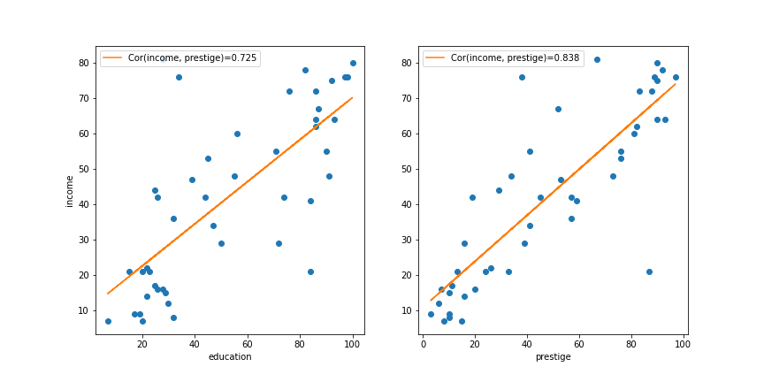

Multiple Regressions
Data-Based Economics
Year 2022-2023
The problem
Remember dataset from last time
| type | income | education | prestige | |
|---|---|---|---|---|
| accountant | prof | 62 | 86 | 82 |
| pilot | prof | 72 | 76 | 83 |
| architect | prof | 75 | 92 | 90 |
| author | prof | 55 | 90 | 76 |
| chemist | prof | 64 | 86 | 90 |
- Last week we “ran” a linear regression: \(y = \alpha + \beta x\). Result: \[\text{income} = xx + 0.72 \text{education}\]
- Should we have looked at “prestige” instead ? \[\text{income} = xx + 0.83 \text{prestige}\]
- Which one is better?
Prestige or Education
- if the goal is to predict: the one with higher explained variance
prestigehas higher \(R^2\) (\(0.83^2\))
- unless we are interested in the effect of education
Multiple regression
- What about using both?
- 2 variables model: \[\text{income} = \alpha + \beta_1 \text{education} + \beta_2 \text{prestige}\]
- will probably improve prediction power (explained variance)
- \(\beta_1\) might not be meaningful on its own anymore (education and prestige are correlated)
Fitting a model
Now we are trying to fit a plane to a cloud of points.


Minimization Criterium
- Take all observations: \((\text{income}\_n,\text{education}\_n,\text{prestige}\_n)\_{n\in[0,N]}\)
- Objective: sum of squares \[ L(\alpha, \beta_1, \beta_2) = \sum_i \left( \underbrace{ \alpha + \beta_1 \text{education}\_n + \beta_2 \text{prestige}\_n - \text{income}\_n }\_{e_n=\text{prediction error} }\right)^2 \]
- Minimize loss function in \(\alpha\), \(\beta_1\), \(\beta_2\)
- Again, we can perform numerical optimization (machine learning approach)
- … but there is an explicit formula
Ordinary Least Square
\[Y = \begin{bmatrix} \text{income}_1 \\\\ \vdots \\\\ \text{income}_N \end{bmatrix}\] \[X = \begin{bmatrix} 1 & \text{education}_1 & \text{prestige}_1 \\\\ \vdots & \vdots & \vdots \\\\ 1 &\text{education}_N & \text{prestige}_N \end{bmatrix}\]
- Matrix Version (look for \(B = \left( \alpha, \beta_1 , \beta_2 \right)\)): \[Y = X B + E\]
- Note that constant can be interpreted as a “variable”
- Loss function \[L(A,B) = (Y - X B)' (Y - X B)\]
- Result of minimization \(\min_{(A,B)} L(A,B)\) : \[\begin{bmatrix}\alpha & \beta_1 & \beta_2 \end{bmatrix} = (X'X)^{-1} X' Y \]
Solution
- Result: \[\text{income} = 10.43 + 0.03 \times \text{education} + 0.62 \times \text{prestige}\]
- Questions:
- is it a better regression than the other?
- is the coefficient in front of
educationsignificant? - how do we interpret it?
- can we build confidence intervals?
<<<<<<<< HEAD:session_4/index.qmd # Explained Variance ========
Explained Variance
f769a93bfa6a7cf861396754a3715ef9ed4a78a2:session_4/index.md
Explained Variance
- As in the 1d case we can compare:
- the variability of the model predictions (\(MSS\))
- the variance of the data (\(TSS\), T for total)
- Coefficient of determination: \[R^2 = \frac{MSS}{TSS}\]
- Or: \[R^2 = 1-\frac{RSS}{SST}\] where \(RSS\) is the non explained variance
Adjusted R squared
- In our example:
| Regression | \(R^2\) | \(R^2_{adj}\) |
|---|---|---|
| education | 0.525 | 0.514 |
| prestige | 0.702 | 0.695 |
| education + prestige | 0.7022 | 0.688 |

- Fact:
- adding more regressors always improve \(R^2\)
- why not throw everything in? (kitchen sink regressions)
- two many regressors: overfitting the data
-
Penalise additional regressors: adjusted R^2
- example formula:
- \(N\): number of observations
- \(p\) number of variables \[R^2_{adj} = 1-(1-R^2)\frac{N-1}{N-p-1}\]
- example formula:
Interpretation and variable change
Making a regression with statsmodels
We use a special API inspired by R:
Performing a regression
- Running a regression with
statsmodels
model = smf.ols('income ~ education', df) # model
res = model.fit() # perform the regression
res.describe()- ‘income ~ education’ is the model formula
OLS Regression Results
==============================================================================
Dep. Variable: income R-squared: 0.525
Model: OLS Adj. R-squared: 0.514
Method: Least Squares F-statistic: 47.51
Date: Tue, 02 Feb 2021 Prob (F-statistic): 1.84e-08
Time: 05:21:25 Log-Likelihood: -190.42
No. Observations: 45 AIC: 384.8
Df Residuals: 43 BIC: 388.5
Df Model: 1
Covariance Type: nonrobust
==============================================================================
coef std err t P>|t| [0.025 0.975]
==============================================================================
Intercept 10.6035 5.198 2.040 0.048 0.120 21.087
education 0.5949 0.086 6.893 0.000 0.421 0.769
==============================================================================
Omnibus: 9.841 Durbin-Watson: 1.736
Prob(Omnibus): 0.007 Jarque-Bera (JB): 10.609
Skew: 0.776 Prob(JB): 0.00497
Kurtosis: 4.802 Cond. No. 123.
==============================================================================Formula mini-language
- With
statsmodelsformulas, can be supplied with R-style syntax - Examples:
| Formula | Model |
|---|---|
income ~ education |
\(\text{income}_i = \alpha + \beta \text{education}_i\) |
income ~ prestige |
\(\text{income}_i = \alpha + \beta \text{prestige}_i\) |
income ~ prestige - 1 |
\(\text{income}_i = \beta \text{prestige}_i\) (no intercept) |
income ~ education + prestige |
\(\text{income}_i = \alpha + \beta_1 \text{education}_i + \beta_2 \text{prestige}_i\) |
Formula mini-language
- One can use formulas to apply transformations to variables
| Formula | Model |
|---|---|
log(P) ~ log(M) + log(Y) |
\(\log(P_i) = \alpha + \alpha_1 \log(M_i) + \alpha_2 \log(Y_i)\) (log-log) |
log(Y) ~ i |
\(\log(P_i) = \alpha + i_i\) (semi-logs) |
- This is useful if the true relationship is nonlinear
- Also useful, to interpret the coefficients
Coefficients interpetation
- Example:
- (
police_spendingandprevention_policiesin million dollars) \[\text{number_or_crimes} = 0.005\% - 0.001 \text{pol_spend} - 0.005 \text{prev_pol} + 0.002 \text{population density}\]
- (
- reads: when holding other variables constant a 0.1 million increase in police spending reduces crime rate by 0.001%
- interpretation?
- problematic because variables have different units
- we can say that prevention policies are more efficient than police spending ceteris paribus
- Take logs: \[\log(\text{number_or_crimes}) = 0.005\% - 0.15 \log(\text{pol_spend}) - 0.4 \log(\text{prev_pol}) + 0.2 \log(\text{population density})\]
- now we have an estimate of elasticities
- a \(1\%\) increase in police spending leads to a \(0.15\%\) decrease in the number of crimes
Statistical Inference
Hypotheses
-
Recall what we do:
- we have the data \(X,Y\)
- we choose a model: \[ Y = \alpha + X \beta \]
- from the data we compute estimates: \[\hat{\beta} = (X'X)^{-1} X' Y \] \[\hat{\alpha} = Y- X \beta \]
- estimates are a precise function of data
- exact formula not important here
-
We make some hypotheses on the data generation process:
- \(Y = X \beta + \epsilon\)
- \(\mathbb{E}\left[ \epsilon \right] = 0\)
- \(\epsilon\) multivariate normal with covariance matrix \(\sigma^2 I_n\)
- \(\forall i, \sigma(\epsilon_i) = \sigma\)
- \(\forall i,j, cov(\epsilon_i, \epsilon_j) = 0\)
-
Under these hypotheses:
- \(\hat{\beta}\) is an unbiased estimate of true parameter \(\beta\)
- i.e. \(\mathbb{E} [\hat{\beta}] = \beta\)
- one can prove \(Var(\hat{\beta}) = \sigma^2 I_n\)
- \(\sigma\) can be estimated by \(\hat{\sigma}=S\frac{\sum_i (y_i-{pred}_i)^2}{N-p}\)
- \(N-p\): degrees of freedoms
- one can estimate: \(\sigma(\hat{\beta_k})\)
- it is the \(i\)-th diagonal element of \(\hat{\sigma}^2 X'X\)
- \(\hat{\beta}\) is an unbiased estimate of true parameter \(\beta\)
Is the regression significant?
- Approach is very similar to the one-dimensional case
- Fisher criterium (F-test):
- \(H0\): all coeficients are 0
- i.e. true model is \(y=\alpha + \epsilon\)
- \(H1\): some coefficients are not 0
- \(H0\): all coeficients are 0
- Statistics: \[F=\frac{MSR}{MSE}\]
- \(MSR\): mean-squared error of constant model
- \(MSE\): mean-squared error of full model
-
Under:
- the model assumptions about the data generation process
- the H0 hypothesis
- … the distribution of \(F\) is known
- It is remarkable that it doesn’t depend on \(\sigma\) !
-
One can produce a p-value.
- probability to obtain this statistics given hypothesis H0
- if very low, H0 is rejected
Is each coefficient significant ?
- Student test. Given a coefficient \(\beta_k\):
- \(H0\): coefficient is 0
- \(H1\): coefficient is not zero
- Statistics: \(t = \frac{\hat{\beta_k}}{\hat{\sigma}(\hat{\beta_k})}\)
- where \(\hat{\sigma}(\beta_k)\) is \(i\)-th diagonal element of \(\hat{\sigma}^2 X'X\)
- it compares the estimated value of a coefficient to its estimated standard deviation
- Under the inference hypotheses, distribution of \(t\) is known.
- it is a student distribution
- Procedure:
- Compute \(t\). Check acceptance threshold \(t*\) at probability \(\alpha\) (ex 5%)
- Coefficient is significant with probability \(1-\alpha\) if \(t>t*\)
- Or just look at the \(p-value\): probability that \(t\) would be as high as it is, assuming \(H0\)
Confidence intervals
- Same as in the 1d case.
- Take estimate \(\color{red}{\beta_i}\) with an estimate of its standard deviation \(\color{red}{\hat{\sigma}(\beta_i)}\)
- Compute student \(\color{red}{t^{\star}}\) at \(\color{red}{\alpha}\) confidence level (ex: \(\alpha=5\\%\)) such that:
- \(P(|t|>t^{\star})<\alpha\)
- Produce confidence intervals at \(\alpha\) confidence level:
- \([\color{red}{\beta_i} - t^{\star} \color{red}{\hat{\sigma}(\beta_i)}, \color{red}{\beta_i} + t^{\star} \color{red}{\hat{\sigma}(\beta_i)}]\)
- Interpretation:
- for a given confidence interval at confidence level \(\alpha\)…
- the probability that our coefficient was obtained, if the true coefficient were outside of it, is smaller than \(\alpha\)
Other tests
- The tests seen so far rely on strong statistical assumptions (normality, homoscedasticity, etc..)
- Some tests can be used to test these assumptions:
- Jarque-Bera: is the distribution of data truly normal
- Durbin-Watson: are residuals autocorrelated (makes sense for time-series)
- …
- In case assumptions are not met…
- … still possible to do econometrics
- … but beyond the scope of this course
Variable selection
Variable selection
- I’ve got plenty of data:
- \(y\): gdp
- \(x_1\): investment
- \(x_2\): inflation
- \(x_3\): education
- \(x_4\): unemployment
- …
- Many possible regressions:
- \(y = α + \beta_1 x_1\)
- \(y = α + \beta_2 x_2 + \beta_3 x_4\)
- …
- Which one do I choose ?
- putting everything together is not an option (kitchen sink regression)
Not enough coefficients
- Suppose you run a regression: \[y = \alpha + \beta_1 x_1 + \epsilon\] and are genuinely interested in coefficient \(\beta_1\)
- But unknowingly to you, the actual model is \[y = \alpha + \beta_1 x_1 + \beta_2 x_2 + \eta\]
- The residual \(y - \alpha - \beta_1 x_1\) is not white noise
- specification hypotheses are violated
- estimate \(\hat{\beta_1}\) will have a bias (omitted variable bias)
- to correct the bias we add \(x_2\)
- even though we are not interested in \(x_2\) by itself
- we control for \(x_2\))
Example
- Suppose I want to check Okun’s law. I consider the following model: \[\text{gdp_growth} = \alpha + \beta \times \text{unemployment}\]
- I obtain: \[\text{gdp_growth} = 0.01 - 0.1 \times \text{unemployment} + e_i\]
- Then I inspect visually the residuals: not normal at all!
- Conclusion: my regression is misspecified, \(0.1\) is a biased (useless) estimate
- I need to control for additional variables. For instance: \[\text{gdp_growth} = \alpha + \beta_1 \text{unemployment} + \beta_2 \text{interest rate}\]
- Until the residuals are actually white noise
Colinear regressors
- What happens if two regressors are (almost) colinear? \[y = \alpha + \beta_1 x_1 + \beta_2 x_2\] where \(x_2 = \kappa x_1\)
- Intuitively: parameters are not unique
- if \(y = \alpha + \beta_1 x_1\) is the right model…
- then \(y = \alpha + \beta_1 \lambda x_1 + \beta_2 (1-\lambda) \frac{1}{\kappa} x_2\) is exactly as good…
- Mathematically: \((X'X)\) is not invertible.
- When regressors are almost colinear, coefficients can have a lot of variability.
- Test:
- correlation statistics
- correlation plot
Choosing regressors
\[y = \alpha + \beta_1 x_1 + ... \beta_n x_n\]
Which regressors to choose ?
- Method 1 : remove coefficients with lowest t (less significant) to maximize adjusted R-squared
- remove regressors with lowest t
- not the one you are interested in ;)
- regress again
- see if adjusted \(R^2\) is decreasing
- if so continue
- otherwise cancel last step and stop
- remove regressors with lowest t
- Method 2 : choose combination to maximize Akaike Information Criterium
- AIC: \(p - log(L)\)
- \(L\) is likelihood
- computed by all good econometric softwares